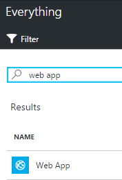

Remember creating the TTN bridge locally on your computer? Will your PC be always on? Most likely not, therefore it seems reasonable to deploy the TTNAzureBridge somewhere else. What place is better than the Azure cloud?
Note: In this workshop, we will create uniquely named Azure resources. The suggested names could be reserved already. Just try another unique name.
Note: The bridge is actually an open source project on github. We accept pull requests :-)
Follow these steps to collect all parts before we can deploy to Azure.
If the bridge is still running, stop the running bridge with ctrl c.
Open a File Explorer and browse to the directory c:\iotworkshop.
Check if the 'TTNAzureBridge.zip' is still available. This should be the same file you downloaded from this OneDrive location to this folder
Navigate to the folder with the executable and identify the config file name 'TtnAzureBridge.exe.config'
The config file should still contain the complete app settings 'ApplicationEui', 'ApplicationAccessKey', 'IotHubName' and the connection string 'IoTHub'
We need both the zip file and the secrets. Note: the config file inside the zip file does not contain the secrets
Follow these steps to deploy a console app as Azure WebJob that runs the integration between The Things Network and Azure IoT Hub.
Log into the Azure portal. You will be asked to provide Azure credentials if needed
On the left, select Resource groups. A list of resource groups is shown

Select the ResourceGroup IoTWorkshop-rg. It will open a new blade with all resources in this group
Select Add. A list of available services appears

Filter it with web app and select Web App

An introduction will be shown. Select Create
A dialog for the new Web App is shown
Enter a unique Web App name eg. IoTWorkshop-wa. A green sign will be shown if the name is unique
The Resource Group eg. 'IoTWorkshop-rg' is already filled in
The App Service plan eg. is filled with a non-specific one
Open the App Service plan blade and select Create New

Enter a unique App name eg. IoTWorkshop-asp. A green sign will be shown if the name is unique
Select West Europe for the location
The Pricing tier will be left unaltered
Select Ok
Our new App Service plan is now added to the Azure Function App
Select Create
Creating a Web App will take some time, but we want to complete this step
So navigate back to the resource group (repeat step 1, 2 and 3) and meanwhile check the Web app creation in the resource group
If the Web App becomes listed, select IoTWorkshop-wa. Otherwise, 'refresh' the list a few times

You are now in the Web App blade. It should be shown like this, with all information available (otherwise, refresh a few times):
A Web App has dozens of settings. Filter the settings for webjobs
Select WebJobs. An empty list is presented
Select Add
Enter a unique Web App name eg. TTNAzureBridge. A green sign will be shown if the name is unique
Select your bridge ZIP file (eg. 'TTNAzureBridge.zip') as file to upload
Ensure that the type is set to Continuous
Set the scale to Single Instance
Select Ok
The Web Job will be created. And it is listed on the page of the Web App
But actually, this job is not ready to run yet. We need to add settings
Clear the settings filter
Select Application settings
The Application settings pane is shown. Scroll down until both the App Settings and Connection Strings are shown

We will enter the actual settings here. These will override the settings in the config file of the bridge Note: this is a great feature for administrators
Add for each app setting the name and value
If in an unforeseen event that the connection to the TTN is lost, we let the Web App restart the web job. Add this extra setting and give it the value True
We also have to add the connection string. Fill in both the name, connection string. Finally, set the kind to Custom
The settings are now ready and should look like this

Press Save. A notification will be shown that the web app settings are updated successfully

Let's check the state of the Web Job.
Filter the settings for webjobs. the bridge should have the state 'Running' by now.
Select the bridge and Logs of your Webjob
A new page is shown, here the status of the Web Job is shown. The status is 'Running'

Go to the Detail logging, by selecting the link of the Web Job details. The TTN messages are handled
You have now deployed the whole upstream to the Azure cloud. You have successfully accomplished all available steps of this workshop.